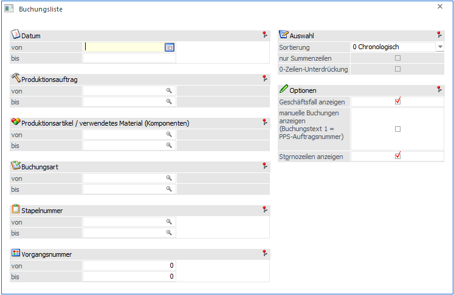
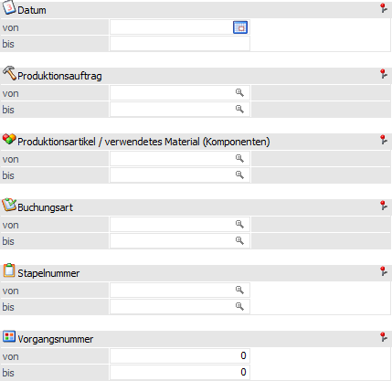
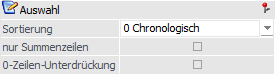
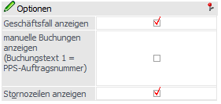

Mit der Buchungsliste, die über den Menüpunkt
1 WinLine PPS
1 Auswertungen
1 Buchungsliste
aufgerufen werden kann, können alle Journalzeilen ausgewertet werden, die im Zuge der Produktion (Produktionsendmeldung und bei der Erstellung von Materialentnahmescheinen mit Lagerabbuchung) erzeugt wurden. Die Grundlage dieser Auswertung bildet das Artikeljournal der WinLine FAKT (Auswertungen - Artikellisten - Artikeljournal).

Die Ausgabe kann durch folgende Kriterien eingeschränkt bzw. beeinflusst werden:
Selektion

Ø Datum von / bis
An dieser Stelle kann eine Einschränkung auf Grundlage des Buchungsdatums der Journalzeilen erfolgen. Es können auch Datümer aus vergangen Wirtschaftsjahren verwendet werden, sofern die entsprechenden Daten noch vorhanden sind.
Ø Produktionsauftrag von / bis
Hier kann eine Selektion auf die auszuwertenden Produktionsaufträge vorgenommen werden.
Ø Produktionsartikel / verwendetes Material (Komponenten) von / bis
An dieser Stelle kann eine Einschränkung auf die auszuwertenden Artikel (Produktionsartikel, Halbfertigprodukte, Komponenten) erfolgen.
Hinweis
Wird im Feld "Produktionsartikel / verwendetes Material (Komponenten) von / bis" z.B. nur eine Artikelnummer eingegeben und dieser Artikel hat auch noch Ausprägungen, so werden alle Ausprägungen automatisch mit angedruckt. Nur wenn während des Anklickens des entsprechenden "Ausgabe"-Buttons die STRG-Taste gedrückt wird, wird nur der Hauptartikel alleine ausgewertet.
Ø Buchungsart von / bis
Mit Hilfe dieser Eingabefelder kann auf die Lagerbuchungsart(en) eingeschränkt werden, für welche die Auswertung durchgeführt werden soll.
Ø Stapelnummer von / bis
Hier können die Stapelnummern eingeschränkt werden, für welche die Auswertung durchgeführt werden soll.
Ø Vorgangsnummer von / bis
An dieser Stelle kann eine Einschränkung über die Vorgangsnummer erfolgen. Die Vorgangsnummer ist eine eindeutige Ziffer, die für jede Endmeldung eines Arbeitsschrittes (auch Teilendmeldung) in das Artikeljournal geschrieben wird (T083.C034), wobei dieses für jede Buchungszeile des Arbeitsschrittes geschieht. Mit der Einschränkung nach der Vorgangsnummer kann die Buchungsliste somit gezielt für einen bzw. mehrere Arbeitsschritte(n) ausgegeben werden (bzw. Endmeldungen davon).
Auswahl

Ø Sortierung
Die Buchungsliste kann mit den folgenden Sortierungsoptionen ausgegeben werden:
ü 0 - Chronologisch
Eine
jahresunabhängige Auswertung nach Datum aufsteigend wird mit dieser Option
ausgegeben.
ü 1 - Artikel
Eine
jahresabhängige Auswertung sortiert nach Artikel wird mit dieser Option
ausgegeben.
ü 2 - Auftrag
Eine
jahresabhängige Auswertung sortiert nach Produktionsauftragsnummer wird mit
dieser Option ausgegeben.
ü 3 - Stapelnummer
Eine
jahresabhängige Auswertung sortiert nach Stapelnummer wird mit dieser Option
ausgegeben.
Hinweis
Neben der jahresabhängigen Buchungsliste, welche automatisch bei den Sortierungsoptionen 1 bis 3 zum Einsatz kommt, kann auch eine jahresunabhängige Variante der Buchungsliste ausgegeben werden. Hierfür muss der folgende Eintrag in der mesonic.ini hinterlegt sein:
[Prod]
PROD97-JoinV021=0
oder es darf im Formular keine V021-Variable bei dem Flag 2 verwendet werden. Durch das Heranziehen von Daten aus V021 kann dies allerdings zu längeren Bearbeitungszeiten für die Ausgabe der Auswertung führen.
Ø nur Summenzeilen
Mit Hilfe dieser Option werden nur Summenzeilen pro Artikel / Auftrag / Stapelnummer ausgegeben. Diese Funktion steht nur zur Verfügung, wenn eine Sortierung ungleich "0 - Chronologisch" gewählt wurde.
Ø 0-Zeilen-Unterdrückung
Durch Aktivierung dieser Option werden alle Zeilen, welche eine Menge und einen Wert von 0 aufweisen, nicht ausgegeben. Dieses betrifft auch Summenzeilen und steht nur zur Verfügung, wenn eine Sortierung ungleich "0 - Chronologisch" gewählt wurde.
Optionen

Ø Geschäftsfall anzeigen
Wird diese Option aktiviert, so werden die Buchungen in der Buchungsliste nach Geschäftsfall gekennzeichnet, wobei folgende Fälle vorliegen können:
ü Endmeldung
ü Schnellendmeldung
ü Materialentnahme
ü Storno der Materialentnahme
ü Arbeitsschritt-Storno
Hinweis
Diese Funktion steht nur zur Verfügung, wenn die Sortierung "0 - Chronologisch" gewählt wurde.
Ø manuelle Buchungen anzeigen (Buchungstext 1 = PPS-Auftragsnummer)
Bei Aktivierung dieser Option werden manuelle Lagerbuchungen in Verbindung mit dem Produktionsauftrag in die Auswertung ausgegeben. Solche manuelle Lagerbuchungen können z.B. im Menüpunkt "Lagerbuchhaltung" (WinLine FAKT - Erfassen - Lagerverwaltung - Lagerbuchhaltung) erfasst werden, wobei als "Buchungstext 1" die Produktionsauftragsnummer eingetragen wird.
Hinweis
Zur Nutzung dieser Optionen ist es notwendig nach bestimmten Produktionsaufträgen in der Buchungsliste zu selektieren.
Ø Stornozeilen anzeigen
Die Checkbox ist im Standard aktiviert, damit werden die Stornozeilen aus dem Menüpunkt Arbeitsschrittstornieren mit ausgegeben. Bei nicht aktivierter Checkbox werden die Stornozeilen unterdrückt.
Buttons

Ø Ausgabe Bildschirm
Mit Hilfe des Buttons "Ausgabe Bildschirm" oder der Taste F5 wird die Buchungsliste am Bildschirm ausgegeben.
Ø Ausgabe Drucker
Durch Anwahl des Buttons "Ausgabe Drucker" wird die Buchungsliste am Drucker ausgegeben.
Ø Ende
Durch Anwahl des Buttons "Ende" bzw. der Taste ESC wird das Fenster geschlossen.